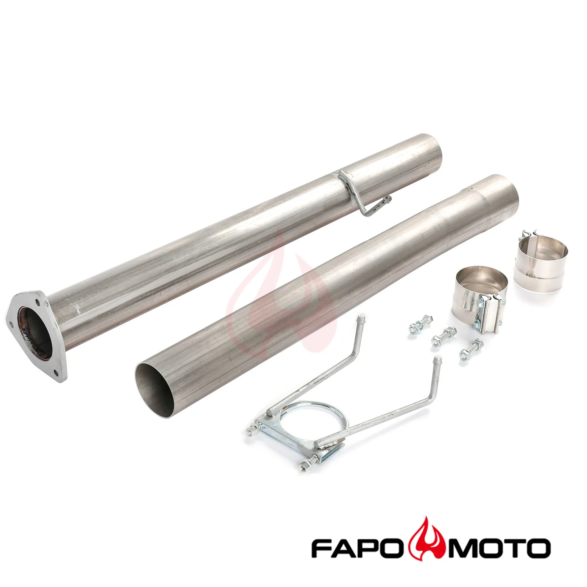

1 / 8FAPO zestaw rury zastępującej tłumik Do Dodge Ram 2500 3500 13-17 6.7L Diesel Cummins 4in 409SS
Zastosowanie: 2013-2017 Ram 2500 6,7 l Diesel z turbodoładowaniem 2013-2017 Ram 3500 6,7 l Diesel z turbodoładowaniem Zawiera: 2 x rura usuwająca tłumik 2 x zacisk 1 x wieszak 3 x śruby Cechy produktu: Wykonane z wysokiej jakości stali nierdzewnej 409 o grubości 2 mm ze skomputeryzowanymi zagięciami trzpienia Wysokowydajna konstrukcja wyścigowa, poprawia przepływ spalin, zwiększając ogólną wydajność Bezpośrednie moc…
Application: 2013-2017 Ram 2500 6.7L Diesel Turbocharged 2013-2017 Ram 3500 6.7L Diesel Turbocharged Includes: 2 x Muffler Delete Pipe 2 x Clamp 1 x Hanger 3 x Bolts Features: Made of High Quality 2mm 409 Stainless Steel with Computerized Mandrel-Bends High Performance Racing Design, Improves exhaust flow for an increase in overall performance Direct Bolt-On Fitment; No Modifications Required; Weight reduced compared with stock resonated pipe All joints are TIG welded to prevent cracking and wear 100% Brand New Items, Never Used Or Installed Accessories shown in the photos are included 1-year warranty for any manufacturing defect Professional Installation is Highly Recommended; Installation Instruction is NOT Included Technical Specifications: Type: Muffler Delete Pipe Pipe Inlet Diameter: 4 in. Pipe Thickness: 2mm Material: 409 Stainless Steel Finish: Natural
999,99 PLN
Opis produktu
Zastosowanie:
- 2013-2017 Ram 2500 6,7 l Diesel z turbodoładowaniem
- 2013-2017 Ram 3500 6,7 l Diesel z turbodoładowaniem
Zawiera:
- 2 x rura usuwająca tłumik
- 2 x zacisk
- 1 x wieszak
- 3 x śruby
Cechy produktu:
- Wykonane z wysokiej jakości stali nierdzewnej 409 o grubości 2 mm ze skomputeryzowanymi zagięciami trzpienia
- Wysokowydajna konstrukcja wyścigowa, poprawia przepływ spalin, zwiększając ogólną wydajność
- Bezpośrednie mocowanie przykręcane; Nie są wymagane żadne modyfikacje; Zmniejszona waga w porównaniu z standardową rurą rezonansową
- Wszystkie połączenia są spawane metodą TIG, aby zapobiec pęknięciom i zużyciu
- 100% nowe przedmioty, nigdy nie używane ani instalowane
- W zestawie akcesoria widoczne na zdjęciach
- 1 rok gwarancji na wszelkie wady produkcyjne
- Zalecana jest profesjonalna instalacja; Instrukcja instalacji NIE jest dołączona
Dane techniczne:
- Typ: rura usuwająca tłumik
- Średnica wlotu rury: 4 cala.
- Grubość rury: 2 mm
- Materiał: stal nierdzewna 409
- Wykończenie: Naturalne
Application:
- 2013-2017 Ram 2500 6.7L Diesel Turbocharged
- 2013-2017 Ram 3500 6.7L Diesel Turbocharged
Includes:
- 2 x Muffler Delete Pipe
- 2 x Clamp
- 1 x Hanger
- 3 x Bolts
Features:
- Made of High Quality 2mm 409 Stainless Steel with Computerized Mandrel-Bends
- High Performance Racing Design, Improves exhaust flow for an increase in overall performance
- Direct Bolt-On Fitment; No Modifications Required; Weight reduced compared with stock resonated pipe
- All joints are TIG welded to prevent cracking and wear
- 100% Brand New Items, Never Used Or Installed
- Accessories shown in the photos are included
- 1-year warranty for any manufacturing defect
- Professional Installation is Highly Recommended; Installation Instruction is NOT Included
Technical Specifications:
- Type: Muffler Delete Pipe
- Pipe Inlet Diameter: 4 in.
- Pipe Thickness: 2mm
- Material: 409 Stainless Steel
- Finish: Natural
FAPO Polska
Ten produkt obsługujemy lokalnie
Autoryzowana obsługa
FAPO Polska prowadzi katalog, kontakt i zamówienia bez odsyłania klienta do zewnętrznych sklepów.
Dobór po aucie
Sprawdzamy dopasowanie produktu do pojazdu, rocznika i wersji przed finalizacją zamówienia.
Wsparcie po zakupie
Masz kontakt w Polsce w sprawach zamówień, wysyłki, gwarancji i zwrotów.